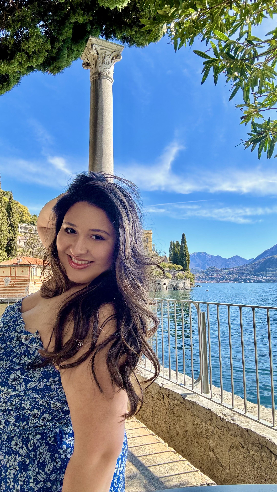

Lake Como
Mar 31 through Apr 4
My solo trip, planned entirely by me during my spring break or otherwise known as, "semana santa." I stayed in Menaggio. I explored Bellagio, Varenna, Villa del Balbianello, Tremezzo, and a final stop at the Milan Cathedral. Absolutely beautiful.